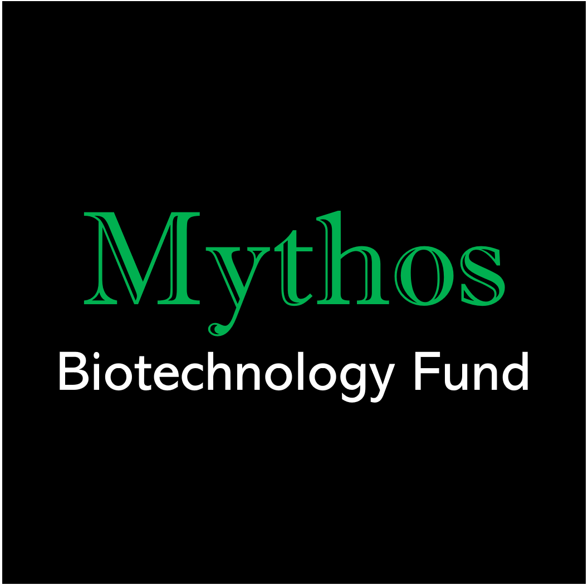

About
Mythos Biotechnology Fund is a general partnership located at Stanford, CA. We meet regularly to discuss and invest in publicly-traded biotechnology and pharmaceutical companies. We leverage our collective expertise in science, engineering, and medicine to make informed investing decisions. Typical topics at our meetings include evaluating drug candidates, assessing patient population, and reviewing clinical trial data. We are also committed to educating our community on investing in the life sciences, as well as organizing opportunities to network with biotech professionals. Contact the management team to get involved!
Mythos was founded in 2017 and comprise of graduate/medical students and postdocs from Stanford University and scientists from biotech companies in the Bay Area. As of 2019, Mythos has over $100,000 under management. Pitches are given by partners or the management team at general meetings. General meetings occur monthly and are open to the public. Following the general meeting, decisions on investment ideas are voted on and approved by the partners. The management team is responsible for organizing partnership activities, portfolio management, and bookkeeping. Share transaction meetings occur twice annually and partners may enter, buy/sell, or exit Mythos.
Investment risk statement: Past performance is not indicative of future results. Any investment involves considerable risk. Individual partners are not liable for capital losses incurred by the Mythos Biotechnology Fund.